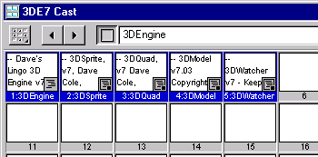
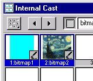
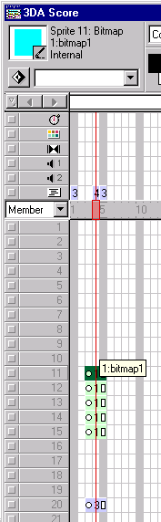
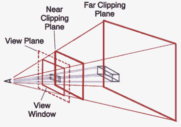
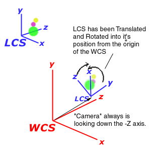

A New Dimension: 3D Lingo in Directorby Dave Cole |
|
|
Let's face it: 2D interface and presentation design is being done to death. We're running out of elbow room in this arena of creativity and the only way out is to climb above it all. As processor speed continues its steady ascention, and systems like the iMac begin to flood the low-end userbase, three-dimensional graphics become ever more feasable; the gaming industry realized this a long time ago -- the reason 3D has not been heavily embraced on the web is twofold: Downloading 3D engines, models, and other data takes a long time. Secondly, if you've ever run CosmoPlayer or some other playback engine and tried delving into VRML you've probably found that there's no such thing as a 3D graphics standard on the web; from machine to machine results vary drastically and half the time your system is brought to it knees by some software bug in a plug-in somewhere. Luckily, there's Shockwave. Shockwave/Flash has become ubiquitous on the web - it's solid and rarely ever crashes. The problem is it can't do 3D, right? Wrong. On any computer monitor, 3D graphics algorithms are simply mathematically sophisticated 2D graphics. All depth cues -- shading, blurring, motion parallax -- are simulated by making 2D graphics on the screen colored and positioned correctly to fool you into thinking you're looking at something in three dimensions. As this follows, all you need to do is throw a few math equations in your shockwave movie (note: no big increase in download time) and you've entered the third dimension. It is clear that shockwave is the best vessel for 3D graphics on the web. This article seeks to explain some basic principles of 3D graphics and how you can apply them to your Director movies. A Crash Course in 3D Graphics TheoryIt all begins with a point in space. 3D graphics are often made of models. These models are made from polygons. These polygons are represented by their vertices. These vertices are often represented as 1x4 arrays -- x, y, z location, and the homogeneous coordinate w (I won't go too deeply into w… suffice to say that it makes the math easier, and is usually set to 1.0). The actual units used are irrelevant. Each model is defined as a set of points in its own individual local coordinate system, and must be translated, rotated, and scaled into its position in the world coordinate system which is relative to the user's view. Every rotation, translation, and scaling operation is often performed using well-known 4x4 matrices in which every step in the transformation process multiplies a 4x4 matrix by another 4x4 matrix. The resulting matrix is called the ModelView matrix, because it holds the transformations to move Models around the virtual world, as well as data defining what the Viewer's virutal camera is positioned to capture. More on this later. After the final 4x4 matrix has been determined, you multiply every point's coordinates, a 1x4 matrix, against the final 4x4 matrix and this determines its new location in 3D space. This result is then multiplied against another 4x4 matrix known as the Projection matrix. This operation simulates what a camera lens does to a ray of light from the 3D world as it intersects 2D film. The final operation, called a Viewport transformation, stretches the resulting coordinates to fit whatever window size you have established on the user's screen. The result is a 1x4 array for each point where the x and y values determine where on the screen the pixel is to show up (the locH and locV if you will), the z value is normalized between 1 and -1 indicating how far (or near) from the screen it is, and w is 1.0 (like I said, don't worry about w). This operation occurs for every vertex in the 3D world, for every frame of animation. Lost? If so, it's ok - it's as easy to get lost in graphics theory as it is hard to explain it in layman's terms. Luckily, you don't have to worry much about the math - I've already written a robust 3D lingo engine for you to use. Dave's 3D EngineThis engine comes in two flavors: One for D6 and one for D7. Unfortunately, the version for Director 6.5 and D6 does not contain lingo calls to draw & color simple polygons. As a result, the next easiest thing is to use the vertices to define sprite positions on the stage as opposed to defining polygons, using the z-depth information to appropriately scale the sprite, change its blend values, and/or change the member of the sprites. This technique can create fairly convincing 3D effects. This is how Dave's 3D Engine for D6 operates. I call this method of 3D "point-based" 3D. The engine for D7, what I call the "3DE7", has added support for polygonal 3D graphics, since D7 has the wonderful Quad feature which allows you to stretch a given bitmap sprite at any of the four corners of the bitmap. This allows for pseudo texture-mapped 4-vertex polygons. For the remainder of this article I will refer to this method of 3D as "polygonal 3D". There are two script cast members that are common to both engines. The first is a movie script that holds all the handlers which perform the actual 3D work and which automate numerous aspects of authoring 3D graphics for you. It's loosely modeled after the popular (and superior) graphics API OpenGL - in fact, I recommend referring to an OpenGL manual while using Dave's 3D Engine. This script is named "3DEngine." The second cast member is a parent script called "3DSprite." This cast member is what allows point-based 3D to happen. One instance of a 3DSprite represents one 3D sprite channel. Dave's 3D Engine v7 for Director 7 gives you three additional parent script cast members. 3DQuad, which is pretty much like 3DSprite except it stretches a sprite's Quad for the purposes of representing polygonal 3D. The next member, 3DModel, is what makes life easy for you. It encapsulates both the 3DSprite and 3DQuad behaviors so that you don't have to get your hands dirty. With it, you can load 3D models in from a variety of 3D Model file formats, and it will generate the set of 3DSprites or 3DQuads which are required to represent the model you've imported. You can then manipulate the whole collection of sprites through one easy interface.  The remainder of this article will explain how to use this engine to create a simple 3D interface, covering step by step some of the principles of 3D graphics theory. We'll do a step-by-step example of how to make a simple 3D movie with the engine -- after you run through this example you should have a firm hold on the concepts involved in order to create more complex movies. Step 0: The PlanWhat we'll be doing in this example is creating a four-sided pyramid that will float in the center of the screen. When the user clicks and drags on that pyramid, it will spin accordingly. When you download the 3D Engine, you receive an example movie with some code detailing some of the basic functionality of the engine. Linked to this movie is an external cast called "3DE7.cst". To create your own movie with the 3D Engine, simply import this external cast, or cut & paste the members into the internal cast of your movie (this is a better idea if you want to Shock any of your content). Create a movie that is 400x400 and import the 5 cast members of the 3D Engine as you choose; these 5 members reside in the 3DE7.cst file distributed with the Dave's 3D Engine release archive. Set the background color of the movie to black or dark grey.  Put any two bitmap images of your choice in the cast. Make sure they're not too big. I recommend making one just a single blue pixel, and making the other a picture of something. Call the first one "bitmap1" and the second one "bitmap2". We'll use these as textures for our model. For every polygon in the model, there is one Quad needed to represent that polygon. These bitmaps will be fit to every Quad in the model we'll use. Unfortunately, right now there is no way to take a single bitmap and stretch it across several Quads, so we have to apply one bitmap to every polygon quad in our 3D Model. Step 1: Setting Up the Score & Initializing the 3D Engine There's no rule that says you can't do otherwise, but how I typically set up the score in using Dave's 3D Engine is to loop on a single frame - in this particular case it makes sense since all our graphics are going to be controlled with lingo. So, in frame 5 of your movie, set up a frame script to "go to the frame". Now, with the inception of D7, you don't have to put placeholder sprites in the sprite channels you are planning on using for 3DSprite/3DQuad objects, however, it is sometimes helpful to put a sprite there to avoid at times unpredictable ink effects and such. I often just make a pixel bitmap in the paint window and stick it offscreen. The 3D engine will replace the sprite and reposition it as needed. In this case, we'll be creating a 3D Model that will be a pyramid with four sides and a base. That's 5 surfaces, which means 5 3DQuad objects, which means 5 sprite channels you'll need to allocate. Let's allocate sprite channels 11 through 15, starting at frame 3. The 3D Engine will need to be initialized. This involves setting up the Projection matrix with the correct viewing Frustum. A Frustum is a definition of the volume that determines which objects are visible (within the camera view) and which are not. It defines the top, bottom, left, right, furthest and nearest edges of the area that defines where objects come into view. It's equivalent to choosing a lens on a camera. A wider viewing frustum creates wide-angle lens effects. A more narrow one acts like a telephoto lens. Here is a diagram of a frustum: We want to define a frustum that has the same aspect ratio as our viewport. A viewport is the actual 2D window that the 3D world is shown within. We'll make our viewport (or view window) 400x400, the stage size, and our frustum of a square aspect ratio, with an average viewing volume.  The viewing volume of the frustum is the area that is between the top,bottom, left, right, far, and near planes that describe the viewing frustum. This volume you could imagine looks like a pyramid with the top chopped off with a base that grows away from the viewer. Only vertices that lie within this volume will be shown on the screen, everything else will not be shown because it is presumed to be outside of the reach of the lens of the virtual camera. At frame 1, create a score script with the following code: on exitFrame
mSelectMatrix("Projection")
mLoadIdentity()
pFrustum(-0.9, 0.9, 0.9, -0.9, 0.7, 200.0)
pViewPort(0,0,400,400)
mSelectMatrix("ModelView")
mLoadIdentity()
end
I'll explain line by line what this code does:
Step 2: Setting Some Initial Global VariablesThe "3DEngine" cast member in the 3DE cast member bundle has a prepareMovie script. You'll notice if you examine it that there are a few global variables that are set in there. You can either override their default values in a script that's executed after the prepareMovie event, or change this code right inside the engine (don't be afraid to poke around!). The global variables you might want to pay attention to are:
Step 3: Creating a ModelIn this example, we're going to use the 3DModel parent script to generate the model from a field cast member that we're about to create. The first step is to define the model within a field cast member using a format I created called .D3D -- this model format will define, face by face, a pyramid shaped model. Each face we'll assign an ink value, blend value, bitmap member to fill in the polygon. We'll also define the vertices of each face in a clockwise fashion to indicate to the 3D engine that its front face is facing outward. Here is the pyramid in .D3D format. Create a field member called "Pyramid.D3D" and paste this in: -- Pyramid.D3D - defined around its own center -- base face: bkg transparent ink, 100% -- blend, bitmap cast member -- don't worry what 0 means for now -- base NEWFACE 36 100 0 bitmap2 -10, -5, 10 10, -5, 10 10, -5, -10 -10, -5, -10 -- front NEWFACE 36 100 0 bitmap1 -10, -5, 10 0, 5, 0 0, 5, 0 10, -5, 10 -- back NEWFACE 36 100 0 bitmap1 10, -5, -10 0, 5, 0 0, 5, 0 -10, -5, -10 -- left NEWFACE 36 100 0 bitmap2 -10, -5, -10 0, 5, 0 0, 5, 0 -10, -5, 10 -- right NEWFACE 36 100 0 bitmap2 10, -5, 10 0, 5, 0 0, 5, 0 10, -5, -10 This is an excellent opportunity to introduce the concepts of the World Coordinate System (WCS) versus each object's Local Coordinate System (LCS). Each model is defined in its own local coordinate system that has nothing to do with the 3D world. The units in both systems are arbitrary. The models are then positioned in the World Coordinate System along with all the other models.  There is an LCS for every model, but only one WCS. In the "Pyramid.D3D" field above, the reason that the "front" face is called the front face here is due to the nature of the WCS. By default, the virtual camera sits at the origin of the WCS and points down the negative Z axis. Without any transformations applied to the pyramid model (or any model), it will also be drawn at the origin of the WCS, oriented such that what is called the front face of the pyramid would face the camera. I say would because at this point the camera and the model are in the same place, so the camera is inside the pyramid. If you were to slide the model back along the Z axis, then the front face would face the viewer. Envisioning this situation, I defined the polygons of the pyramid in a clockwise order as they would appear if I were looking at them head on. This way I can enable backface culling for a cleaner result. Now we must create a lingo script to represent this object. Create a new parent script, call it "Pyramid". This script will encapsulate the model, representing both its visual status and its interactivity. In the constructor handler, we'll import the .D3D model. property model global rotX, rotY on new me model = new (script "3DModel", 1, "Pyramid.D3D", ¬ 11, 15) rotX = 0 rotY = 0 add the actorlist, me end First we set up some properties, rotX and rotY which we will use for interactivity later. We keep the model property around to hold a pointer to the 3DModel object. The call to create a new 3DModel takes the argument 1, which tells the 3D model a .D3D file is coming (you can choose other numbers for other formats, see the docs), the name of the field that defines the Pyramid, and then the range of sprite channels the model is allowed to occupy, 11-15. We then add the Pyramid object to the actorlist so it can receive stepFrame events. Make sure that on stopMovie you're setting the actorlist = []. Step 4: Adding InteractivityThis is a very simple step. All we aim to do here is provide the interface with which the user spins the pyramid. We'll go for a click n' drag approach. Create a quickdraw box cast member that covers the stage -- make it a non-filled quickdraw box with a line width of 0. Put it in sprite channel 20. Attach a behavior to it. This behavior will track the mouse's movements and modify the global variables rotX and rotY, which we'll use as arguments later to move the pyramid. Your behavior should look like this: global rotX, rotY on mouseDown me y = the mouseH x = the mouseV oldRotX = rotX oldRotY = rotY repeat while the stilldown rotX = oldRotX + (the mouseV - x) rotY = oldRotY + (the mouseH - y) updateStage end repeat end Step 5: 3D TransformationsThis is the part of the article where we actually affect the 3D model's position in space. Now that we have a way to interactively change the rotX and rotY values, we need to plug them into the 3D engine's transformation calls. Simply put, a transformation is anything that potentially affects the position of a vertex in space. It can, for instance, be a translation, a rotation, or a scaling procedure. In this case we will be modifying the pyramid's rotation. After any model has been properly transformed to its correct position in the world coordinate system (known as a model transformation) that model must be then transformed again to represent the virtual camera's position and orientation. The idea of positioning a camera is really a falsehood. What you are in actuality doing is moving every model in the world coordinate system, one at a time, to a new space in the world coordinate system to fake the idea that a camera is being moved. For instance, by default the view of the 3D engine is positioned at the origin of the world coordinate system looking down the negative Z axis. In some respects it always is. If you position several models, say, -30 units away from the origin on the Z axis, and then translate them to -50 units away from the origin on the Z axis, the appearance to the viewer is that the camera is moving away from the objects 20 units. In reality, it is the objects that have moved. This is how it is with moving a virtual camera in 3D. The general rule is, first make the transformations to position your models in space, after which we'll make the camera transformations. First do your rotations to orient the model, then do your scaling if needed (often it is not), then do your translation to position your model in the world coordinate system. After all this, now perform your camera transformations. To move your camera "forward" --translate all your models back; to move your camera left, translate all your models right. The same rotation calls you made to orient your model, now that it has been translated to the right place in the WCS, will cause your models to orbit around the origin of the world coordinate system (technically where your camera is always located). Rotations always happen around the center of the WCS - if your model is not centered on the WCS origin then it will appear to orbit around the origin instead of spin on its own center. That having been said, we will write the code to move the pyramid. We'll do this using the stepFrame event. Write this into the code of your container script for the Pyramid, "Pyramid". on stepFrame me -- step 1 - "erase" ModelView matrix mLoadIdentity() -- step 2 - since the pyramid is defined sitting at -- the origin, orient the pyramid xRotateX(rotX/100.0) xRotateY(rotY/100.0) -- step 3 - translate the pyramid 30 units down the -Z axis -- this is the same as moving the camera 30 units back -- along the positive Z axis xTranslate(0, 0, -30.0) -- step 4 - Multiply the vertices of our model against -- the resulting ModelView matrix Transform(model) -- step 5 - Draw the model with its newly transformed vertices. drawMe(model) end Step 1 of this script does is sets the ModelView matrix, the 4x4 matrix I mentioned earlier to an identity matrix. This is the mathematical equivalent of not performing any transformations -- wiping the slate clean. One approach to 3D animation is to do this every frame and then reposition every model all over again for every frame of the animation. Another approach never initializes the ModelView matrix between frames and uses the cumulative transformations to move the geometries -- but we're not going to use that one for this example. Step 2 then applies the rotation global variables rotX and rotY to the rotation transformation handlers. I divide these values by 100 because we're going from pixel difference to radians -- not doing this would cause the pyramid to spin wildly. The pyramid will spin on its origin because the model is defined around its own origin in its local coordinate system and has not yet been translated away from the origin of the world coordinate system. This is technically our "model" transformation. Step 3 then moves the model 30 units down the -Z axis -- which is equivalent to backing the camera off the model 30 units. This is technically our "viewing" transformation. Note that both step 2 and 3 have affected the ModelView matrix -- it is the order that is important. Step 4 actually multiplies the local coordinate system vertices of the model against the modelView matrix and the projection matrix, and saves the results within the model datatype. These results are either each vertex's transformed locH and locV on the screen (viewport) or 0 if the vertex has been translated outside of the viewing frustum and hence is offscreen. Step 5 finally draws each polygon of the model based on its locally stored transformed vertices. If a vertex is outside of the viewing frustum, that polygon is not drawn. This is known as clipping. The idea of clipping is a powerful one because it means that you can define a whole virtual universe and only the portions of the universe that appear within the viewing frustum will be drawn. All the processor time it would have taken to blit the image is not allocated. Step 6: Z-SortingWe could add a further step to the drawing cycle of our pyramid which would ensure that the sprites which represent the frontmost surfaces will be assigned a higher locZ property so as to always properly appear on the screen. After all, it would be a bit embarrasing to have the rear polygons of a model starship, for instance, be drawn on top of the front ones. This feature is easily enabled by setting a global variable called "sortSprites" to TRUE. Do this in prepareMovie and the 3DModel object of the 3DE7 is smart enough to make a call to the engine's zSort() handler for that model. This variable is already set to TRUE by default in the prepareMovie handler of the engine. Tying up the loose endsAll you have to do now is instantiate the object. Since you are looping on frame 5 of your score, create a frame script in frame 4. This script will instantiate the 3D model and get things underway. global pyramidHandle on exitFrame pyramidHandle = new(script "Pyramid") end That should do it. Make sure rotX and rotY are set to 0 in the prepareMovie handler, rewind, press play, and you should have a pyramid sitting in front of you! If you click and drag over the pyramid (where you have placed your invisible quickdraw character), you should be able to "spin" the pyramid interactively. You have now scratched the surface of a much larger 3D framework. Using the basic skills you have learned in this article, you should be able to go on and create far more complicated 3D environments to suit your needs. Is This The Only Way?No. As my graphics professor put it, don't be a slave to your mathematical system -- you create your mathematical system to be subjugate to your needs. There are many ways in which you can represent the math needed to render 3D graphics; it just happens that the path I have taken is one of the most versatile, adaptable, scalable, and widely written-about methods humanity knows about today. If you are daring, and your needs don't require such a generalized system, feel free to explore your own avenues; you might come upon a faster, more streamlined way to do what you need to do -- but if you ever want to expand an existing system troubles could creep in. Explore the links below, widen your horizons, and make your own decisions. Personally, I find the exploration of new ways to express mathematical concepts in artistically enticing ways to be the driving impetus behind my work; Leonardo DaVinci followed this path and look where it got him.Related LinksA Director 7.0 movie of this completed example can be be downloaded in Mac or PC format. The documentation for Dave's 3D Engine can be found at: You can learn more about 3D graphics theory through this link I found:
Here's an OpenGL related link for a tutorial on similar functions to
the handlers in Dave's 3D Engine: Some good examples of 3D lingo I've found on the web (not necessarily using Dave's 3D Engine):
Dave Cole is a computer scientist/filmmaker from Detroit, Michigan. After having learned Director and lingo studying animation at the University of Michigan, he moved on to develop CD-ROMs, applications, and web sites for Sigma6 Interactive Media in Detroit. In addition, he has produced a short animation shown at UCON 99, "Infestation," as well as an interactive weather browser, "BlueSkies 3," through the Weather Underground. In his spare time, he freelances, plays music, and builds 3D engines. |